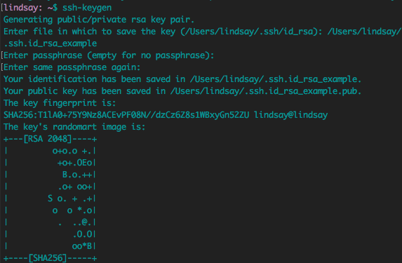

Internet 101:
Things Everyone Assumed I Knew, But I Did Not
a.k.a. Lindsay's Computer Networking Class 101 Because Her Bachelor's is in History
Lindsay Gaudinier at Hook 42
About me
- Developer at Hook 42
- Swimming, cats, and the internet

The Thought Behind the Talk
- There are a bunch of moving parts in order to get a website up and going.
- No one can understand everything, there just isn't enough time. Things move way too fast.
- I compiled a list of words and acryonyms that keep popping up, but were not integral to my work.
- I looked into some of these concepts, and lo and behold there was a pattern...
How the series of tubes that make up the internet actually work
Quick note: sometimes words are mentioned before they are defined. Please have patience.

Early Networking
- Some of the first computers networks started in research facilities. These computer networks were physically close and connected by coaxial cables.
- This network is called a LAN, a local area network.
- The most successful early LAN technology was Ethernet, introduced by Xerox in the early 1970s.
- Each computer has a unique MAC (media access control) address, and when a computer sends out data, the data is prefixed with the MAC address in a header.
- Computers listen for the their address for the header.
- When traffic increases, two computers may try to send information at the same time. This is known as a collision.
A Bigger Network
- Things get trickier when more and more computers get added to the network.
- Solution: split the network up. You do this with a network switch.
Routing
- Now that we have split up the network, data may take multiple stops to arrive at its final destination.
- Message switching: when the data takes multiple stops (hops) to get from its starting point to its end point.
- Upside: message switching is extremely flexible.
- Downside: message switching can run into problems when the size of the message is big.
Traceroute
Packets
- Messages too big for message switching? Not a problem! Break them up into little pieces called packets.
- Each packet contains a destination address, so routers know where to send the item.
- This destination format is defined by IP, and every computer has its own IP address.
- Since packets can take different routes to get to their destination IP address, packets can get out of order. TCP/IP handles this issue.
An Even Bigger Network
- A client connects to a LAN. If you're using a laptop to connect to the internet, likely you're connecting to a Wireless (wifi) Router.
- The LAN connects to a WAN (wide area network), which is likely a router run by your Internet Service Provider (ISP). This may be a regional router for your neighborhood.
- That neighbor WAN connects to an even bigger WAN, and so forth, until you hit the NSP (network service provider) internet backbone. This backbone consists of big routers with high bandwidth computers.
- After moving through the internet backbone, you will reach the server that has the file. Data gets split into packets and makes it way back to the client.
The Internet
Source: www.cs.uni.edu
But not really

First, we need to understand the Open Systems Interconnection (OSI) Model
OSI model is a conceptual model that explains how network systems are supposed to communicate with each another, and breaks down this communication into abstract layers.
OSI Model Layers
User interacts with this layer (Chrome, Outlook, Firefox)
Where the Operating System lives
Deals with the communication, creates a session between the two computers
Decides how much info is sent at one time, responsible for transportation of data back and forth
Routers operate at this layer, includes IP address
Switches operate at this layer
Includes the wires, cables and tubes
Internet Protocol Suite
a.k.a. Transmission Control Protocol (TCP) / Internet Protocol (IP) because these are the foundational protocols in the suite
a.k.a. Department of Defense (DoD) model
Protocol: "a defined set of rules and regulations that determine how data is transmitted in telecommunications and computer networking" - Wikipedia
Internet Protocol Suite
- The rules that define how data is transmitted across a network, and how data should be formatted so other systems on that network can understand it.
- Today, TCP/IP is the stardard protocol for communication across networks. Another common protocol is called User Datagram Protocol (UDP).
TCP/IP and the OSI Model
TCP/IP Model
TCP/IP Model
Let's Break Down the Layers
Application Layer
- Hypertext Transfer Protocol (HTTP)
- File Transfer Protocol (FTP)
- Simple Mail Transfer Protocol (SMTP)
- Secure Shell (SSH)
- Transport Layer Security / Secure Sockets Layer (TLS/SSL)
- Domain Name System (DNS)
Transport Layer
- Transmission Control Protocol (TCP)
- User Datagram Protocol (UDP)
- Reliabilty with acknowledgement that packets have been sent and received (ACK) and data checksum
- Multiplexing and ports
Internet Layer
- Internet Protocol (IP)
- Destination network address
- Source network address (IP address)
- Works with outgoing and incoming packets
Network Layer
- Also known as the the Link Layer
- How data is physically sent
- Ethernet, Digital Subscriber Line (DSL), Integrated Services Digital Network (ISDN), Fiber Distributed Data Interface (FDDI)
Encapsulation
Each layer adds a header and an (optional) trailer to the information from the preceding layer
Application Data Flow
Why TCP/IP Won
- End node verification - both endpoints (client, server) of any data transfer are responsible for making sure the transfer was successful
- Dynamic routing - end nodes can transfer data over multiple paths, and the network will choose the best path for each data transfer
- Large redundant networks (the internet) have tons of routes and lots of possible paths between the two end nodes
Let's Dig in More!!!
Turns out, a lot of the concepts I wanted to learn live in the Application layer
- HTTP, HTTPS
- TLS / SSL
- SSH
- FTP, SFTP
Hypertext Transfer Protocol (HTTP)
- Created by Tim Berners-Lee at CERN in 1989
- Protocol to transfer hypertext, which is just a text that links to other information by hyperlinks
- The HTTP client sends a request to a HTTP server, and the server returns a response message
- Known as a pull protocol, because the client pulls information from the server
HTTP - The URL
1. The user types in a Uniform Resource Locator (URL) into a browser
https://www.hook42.com/blog?page=2
protocol/scheme
hostname
port (not visible)
path-and-file-name
query (optional)
#fragment (optional)
HTTP - Request and Response
2. Client (laptop) sends an HTTP Request to the Server

3. Server sends an HTTP Response back to the Client
HTTP Request/Response Example
HTTP Status Codes
| Response Number | What it means | Example |
|---|---|---|
| 1xx | Informational Response | 103 Early Hints |
| 2xx | Success | 204 No Content |
| 3xx | Redirection | 301 Moved Permanently |
| 4xx | Client Errors | 404 Not Found |
| 5xx | Server Errors | 503 Service Unavailable |
But the Hook 42 website started with https:// not http://
HTTPS
The difference between this:
and this:
HTTPS
a.k.a. HTTP over TLS or HTTP over SSL
The S stands for Secure
HTTPS
- Similar to HTTP, except HTTPS tells the browser to add an encryption layer of SSL/TLS to protect data like urls, cookies and sensitive metadata
- Assures the website vistor that they are accessing the authentic website, by protecting the user from man-in-the-middle attacks, eavesdroppers, and ISPs/governments.
- In 2014, Google announced they would be incorporating HTTPS as a ranking signal
- Enable HTTPS on your site with a paid or free certificate, which contains the hostname of the website the client connects to, and is signed by a trusted certificate authority
Secure Sockets Layer (SSL) / Transport Layer Security (TLS)
- Crytographic protocol started by Netscape in 1995 for e-commerce. Version 1.0 was never released, last SSL version was 3.0 in 1996. Replaced by TLS 1.0 in 1999. Current version is TLS 1.2.
- Doesn't perfectly fit into one layer of the OSI model layer or TCP/IP model. SSL/TSL is more of a mashup of the Application Layer and the Transport Layer.
How SSL / TLS works - Part 1
1. Basic TLS Handshake
Client and server now compute a "master secret"
How SSL / TLS works - Part 2, 3 and 4
2. Client sends a ChangeCipherSpec record that says everything sent is now encrypted
Server attempts to decrypt the client's Finished message and verfy it. If the decrytion/verification fails, the handshake has failed, and connection should be dropped.
3. Server sends a ChangeCipherSpec record that says everything sent is now encrypted
Client attempts to decrypt the server's Finished message and verfy it. If the decrytion/verification fails, the handshake has failed, and connection should be dropped.
4. Application phase: now all the exchanges between the client and server are authenticated and encrypted
Secure Shell Protocol (SSH)
- A cryptographic protocol for securely operating network services over a non-secure network for privileged/admin users.
- Designed in 1995 as a replacement for TELNET, rlogin, FTP, and rsh protocols.
SSH Keys
- SSH uses public key cyptography, a.k.a. asymmetrical cryptography, that uses a public key and a private key.
- Public keys can be shared, while private keys are secret and known only to the owner.
Key Creation
Creating a SSH Key
Public and Private Key
Public Key
Private Key
Uploading Public Key
SSH - How it Works
private key
public key
File Transfer Protocol (FTP)
- Protocol used for transfering files between a client and a server invented
- Invented in the 1970s, FTP predates HTTP. HTTP is considered better for quick transfers required for web pages.
- Not secure, since FTP does not encrypt the traffic between the client and server
- Can use the command line or FTP clients (FileZilla, Cyberduck)
How FTP Works
- Active mode: client listens for incoming data on a port. Client sends the the command port information to inform the server the port its using. The server initiates a data channel to the client from its port.
- Passive mode: client sends a command to the server and receives a server IP address and server port number. Client then uses data to open a connection from a client port to the server IP address and server port.
- Data Transfer: stream mode, block mode, compressed mode.
SSH File Transfer Protocol
a.k.a. Secure File Transfer Protocol (SFTP)
Note: FTP can also use SSL/TLS, which is known as FTPS. NOT the same as SFTP.
Other ways to securely transfer files include Secure copy protocol (SCP) and rsync.
SFTP Example with Pantheon
SFTP Example with Pantheon
Diving Deeper into the Transport Layer
TCP's Sibling: User Datagram Protocol (UDP)
- TCP and UDP are the most common protocols for the Transport layer.
- UDP is connectionless, skips error checking, and doesn't fix dropped packets. This makes it faster than TCP.
- Many applications use UDP, such as Domain Name System (DNS), Dynamic Host Configuration Protocol (DHCP) and Routing Information Protocol (RIP).
WTF is a Port?
Port is a Concept
Ports let you multitask
- Your computer only has one IP address and only one MAC address. So how exact do packets know what application to go to? Ports!
- "Ports are a logical construct that identifies a specific process or a type of network service" - Wikipedia
- In other words, ports are a concept of specific numbers that help guide packets to their final destination in the application layer.
- Multiplexing: multiple signals are combined into one signal to share resources.
Ports
Well Known Ports / System Ports (0 - 1023)
Widely used types of network services
| Port # | Description |
|---|---|
| 1 | TCP | 20 | FTP data transfer |
| 21 | FTP control command |
| 22 | SSH, SFTP |
| 23 | Telnet |
| 53 | DNS |
| 80 | HTTP |
| 118 | Structured Query Language (SQL) Services |
| 194 | Internet Relay Chat (IRC) |
| 443 | HTTPS |
| 666 | Doom |
Registered Ports (1024 - 49151)
Assigned by the Internet Assigned Numbers Authority (IANA)
| Port # | Description |
|---|---|
| 2375 | Docker |
| 3306 | MySQL database system | 8888 | MAMP web server | 8889 | MAMP MySQL database server |
| 8983 | Apache Solr |
| 9418 | git |
| 11211 | memcached |
| 33434 | traceroute |
| 33848 | Jenkins |
Port Status
Port Status
Check port status: nmap (Network Mapper), netstat (network statistics), and lsof (list open files)Internet Socket
- Defined as the combination of an IP address and port number. The endpoint for sending or receiving data in a network.
- If a socket has connected to another socket by TCP, then the socket also has a remote socket address.
-
Types of sockets:
- Datagram sockets (connectionless sockets using UDP)
- Stream sockets (connection-oriented sockets using TCP)
- Raw sockets (routers and network equipment)
Internet Domain Socket States - Netstat Manpage
| State | Meaning |
|---|---|
| CLOSED | The socket is not in use. |
| LISTEN | The socket is listening for incoming connections. |
| SYN_SENT | The socket is actively trying to establish a connection to a remote peer. |
| SYN_RCVD | The socket has passively received a connection request from a remote peer. |
| ESTABLISHED | The socket has an established connection between a local application and a remote peer. |
| CLOSE_WAIT | The socket connection has been closed by the remote peer, and the system is waiting for the local application to close its half of the connection. |
| LAST_ACK | The socket connection has been closed by the remote peer, the local application has closed its half of the connection, and the system is waiting for the remote peer to acknowledge the close. |
| FIN_WAIT_1 | The socket connection has been closed by the local application, the remote peer has not yet acknowledged the close, and the system is waiting for it to close its half of the connection. |
| FIN_WAIT_2 | The socket connection has been closed by the local application, the remote peer has acknowledged the close, and the system is waiting for it to close its half of the connection. |
| CLOSING | The socket connection has been closed by the local application and the remote peer simultaneously, and the remote peer has not yet acknowledged the close attempt of the local application. |
| TIME_WAIT | The socket connection has been closed by the local application, the remote peer has closed its half of the connection, and the system is waiting to be sure that the remote peer received the last acknowledgement. |
All The Sources

Sources
Application Layer
- https://www.ntu.edu.sg/home/ehchua/programming/webprogramming/HTTP_Basics.html
- https://code.tutsplus.com/tutorials/http-the-protocol-every-web-developer-must-know-part-1--net-31177
- https://www.youtube.com/watch?v=eesqK59rhGA
- http://www.garshol.priv.no/download/text/http-tut.html
- https://www.howtogeek.com/181767/htg-explains-what-is-https-and-why-should-i-care/
- https://https.cio.gov/
- https://doepud.co.uk/blog/anatomy-of-a-url
- https://www.instantssl.com/ssl.html
- https://www.youtube.com/watch?v=iQsKdtjwtYI
- https://www.youtube.com/watch?v=n_d1rCXNrx0
- https://www.youtube.com/watch?v=cuR05y_2Gxc
- https://www.youtube.com/watch?v=Rp3iZUvXWlM
- https://hpbn.co/transport-layer-security-tls/
- https://letsencrypt.org/getting-started/
- https://www.youtube.com/watch?v=zlv9dI-9g1U
- https://www.youtube.com/watch?v=tCHldm7QTJo
- https://www.youtube.com/watch?v=z7jVOenqFYk
- https://www.cs.colostate.edu/helpdocs/ftp.html
- https://www.ssh.com/ssh/public-key-authentication
- https://kb.iu.edu/d/aews
Transport Layer
- https://www.webopedia.com/quick_ref/portnumbers.asp
- https://www.youtube.com/watch?v=zCAyinelie0
- https://www.youtube.com/watch?v=AXrFCbD4-fU
- https://stackoverflow.com/questions/152457/what-is-the-difference-between-a-port-and-a-socket
- https://www.cyberciti.biz/faq/what-process-has-open-linux-port/
- http://manpages.ubuntu.com/manpages/xenial/en/man8/netstat.8.html
- ftp://lsof.itap.purdue.edu/pub/tools/unix/lsof/FAQ
TCP/IP
- https://en.wikipedia.org/wiki/Transmission_Control_Protocol
- https://en.wikipedia.org/wiki/Internet_protocol_suite
- https://www.thegeekstuff.com/2011/11/tcp-ip-fundamentals/
- https://technet.microsoft.com/en-us/library/cc958821.aspx
- https://stackoverflow.com/questions/38519677/how-to-use-graphviz-draw-a-tcp-ip-data-encapsulation-diagram
- https://www.technologyuk.net/telecommunications/internet/tcp-ip-stack.shtml